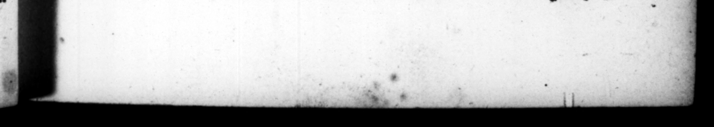

— D. J o. Pronum & ſumptuoſum Ag libidines fuiſſe conſtans opinio - eſt, plurimaſque & in quibus Poſtumiam Servii Sulpicii, Lolliam Auli Gabinii, Tertullam M. Craſli, etiam Cn. Pompeji Muciam. Nam certe Pompejo, & a cCurionibus patre & fillo, & multis exprobratum eſt, quod cn jus cauſſæ poſt tres 1. „ exegiſſet uxorem, & uem gemens Ægiſthum aplere conſueſſet, ejus n potentiæ cupiditate in Em atrimonium ſet. ente alias dilexit M. Bruti matrem Serviliam : cui & proximo ſuo conſulatu ſexagies HS, margaritam mer Catns eſt: & bello civill ſuper alias donationes, ampliſſima prædia ex auctiomibus haſte nummo adWixic, Cum quidem pleriſzue vilitatem mirantibus, acgtiſſime Cicero, meli—_—, inquit, emptum ſciatis, eri 4 eſt ; exilti» mabatur enim Servila, etiam filiam ſuam Tertiam Cæſari conciliare, | 51. Ne provincialihus quidem matrimoniis abſtinuiſſe vel hoc diſticho apparet, jactato #que à militibus Gallicum triumphum. EA NASN NFS Kerr RT 2 Ss A bald» 52: Dilexit & reginas, inter quas Eunoven Mauram, gudis nxorem : Cui maritoque ejus, plurima & immenſa tribuit, ut Naſo ſcripſic : ſed maxime Cleopatram, cum ua & conyivia in primam lucem ſæpe protraxit, & eadem nave thalamego pæne Achlopia tenus Egyprum urrus CAESAR illuſtres feminas corrupiſſe: 45 far 4 Ethnopia, had nit * 3 50. It is agreed by al that b was much addif:d to women, and very expenſive in his intriegues with them 3 2 whieh 1 —— 7 Pq 4 71 len as Bols the of Servi us Adee; Lollia the lady of Aulus Gabinius, Tertulla M. Craſſus 1, and Muti Cn. Pomifey's. For it's certain Pompey was wpbraided by the Curid's father anid ſon, and others, That he had, 1 his ambition, married the daughter of a upon whoſe account he divord | his wife, after he had had three children by ber, and whom he uſed with a heavy ſigh to call Rgiſtthas, Bur above all the reſt of his miſtreſſes, be was fond of Servilis M Brutw's Nther, for whom he purchaſed, in the conſulſhip next after his intriegue with her, 4 pearl that cofs 6050000 ſeſ⸗ ferces; and in the ni war, be other preſents, conſigned to ber, ub a very ſlig he conſi der ation, ſome conſsderale — 725 1 expoſed 0 ic 3 when m 0 , —— at the lomneſe of he poop | Cicero very wittily ſaid, to let you know how much a better purchaſe this is than you imagine, Tertia deducta eſt 3 Ser vilis was ſuppoſed wo her daughter Tertia to . FI, He made free with the wives of ſeveral 7.75 in the provinces, as appears by this diflich, which was as much uſed by the ſoldiers in the Gallick triumph as the former. | Urbani ſervate uxeres, mæchum calyum adducimus . Aurum in Gallia effutuiſti : heic ſumpſiſti mutuum. Look to your wives, ye Cits, we bring a blade, te maſter of the wenching trade. Thy gold thou ſpent on many a Gallick whore, And when *rwas gone, came here to borrow more. 52, He had his miſtreſſes ſome queens tov, as Eunce the mer udes, to whom an the wife of her husband too he made à great many immenſe preſents, as Naſo 7 * but his darling miſtreſs was airs, with whom he would revel all night aw ox 7 and would 2 one with ber up tin a plcajure27 —_ dene · —
